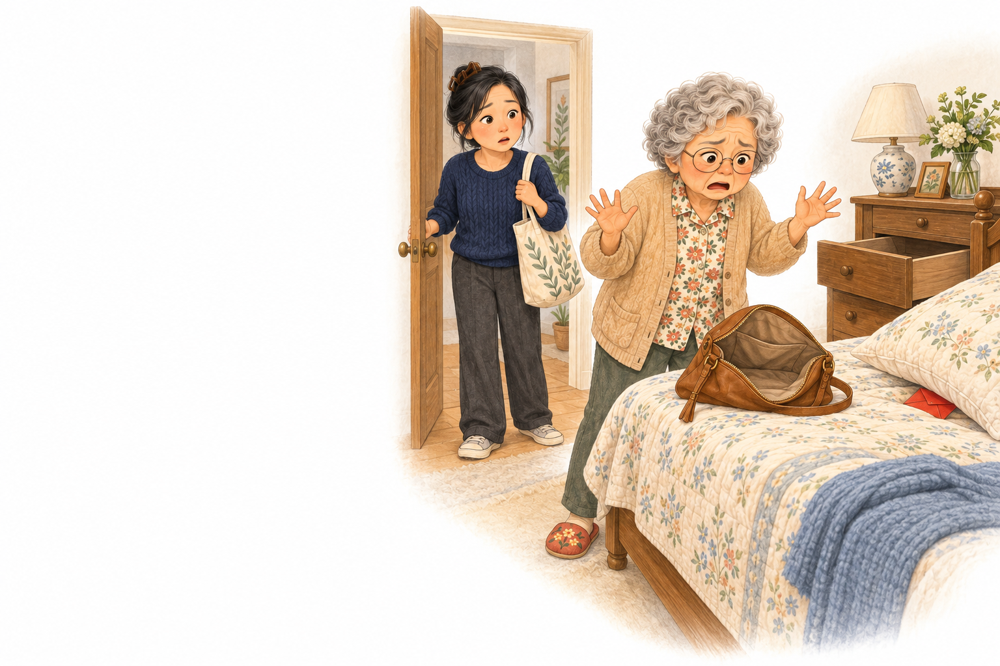
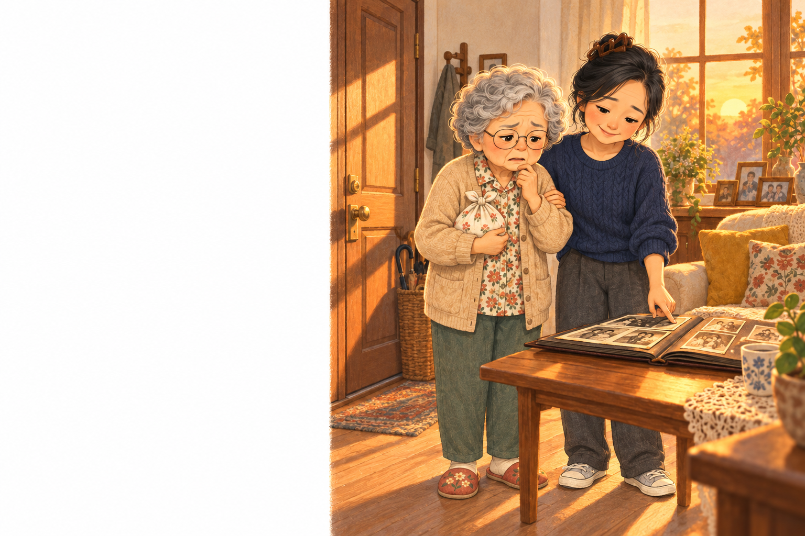
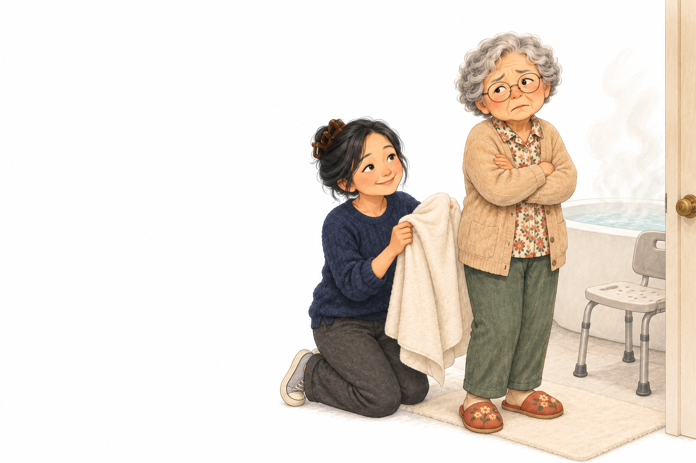
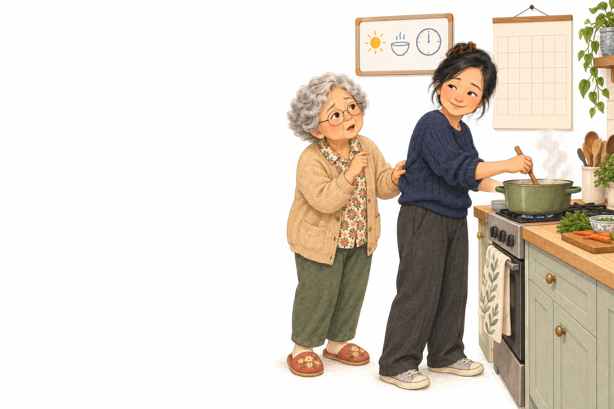
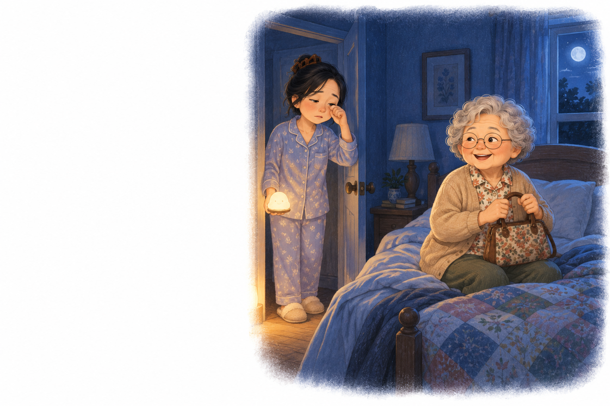
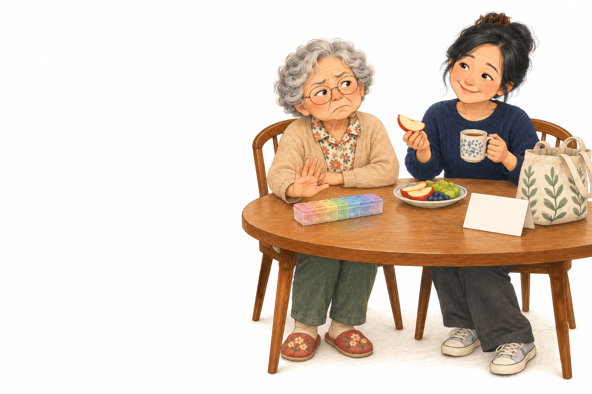
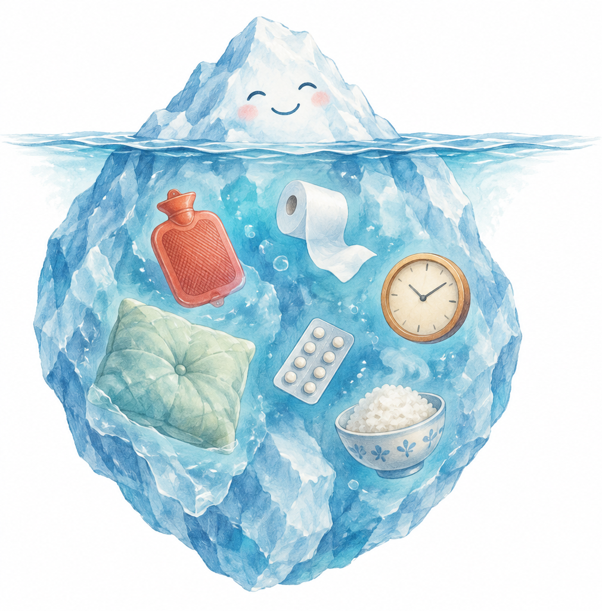

失智症的行為與精神症狀（BPSD）
六個家裡最常見的場景、三種接法：
哪一句，接得住她？
馬偕紀念醫院失智防治中心 陳培豪醫師

我的錢被偷了！1
我要回家！2
我不要洗澡！3
今天要去哪裡？4
天亮了，我要出門！5
我又沒病！6看得到的是行為，看不到的是原因
台灣失智者，至少有一項行為及精神症狀
馬偕：長輩有激動症狀時，照顧者困擾達中度以上

資料：《失智症防治照護政策綱領暨行動方案 3.0》頁 27；馬偕紀念醫院失智防治中心首次神經精神量表（NPI-Q）評估 935 人。
一次只改一件事，一週後回頭看
什麼時候？在哪裡？對誰？發生前剛好在做什麼？
身體：痛、便秘、感染、藥物
環境：太吵、太暗
溝通：太快、太多
一次只改一件事：調燈光、改時間、換說法、換人
一週後回頭看：有沒有變少？沒用就回到「找原因」
Kales HC, et al. J Am Geriatr Soc 2014;62:762–769. PMID 24635665；Kales HC, Gitlin LN, Lyketsos CG. BMJ 2015;350:h369. PMID 25731881。
台灣 2026 專家共識：非藥物方法是第一線
找誘因、調環境、安排活動、換說法
疼痛、便秘、感染、脫水、藥物副作用
有安全危險或非常痛苦時；最低劑量、定期檢討
自己拿安眠藥、鎮靜藥，或別人的藥給長輩吃。容易跌倒，也會更混亂。
路易氏體失智對抗精神病藥物特別敏感：看任何一科，都要讓醫師知道這個診斷。
Cheng CM, et al. Pharmacological management of agitation in dementia: an evidence-based review with expert consensus. J Chin Med Assoc 2026;89:187–197. PMID 41527161；McKeith IG, et al. Neurology 2017. PMID 28592453。
晚上七點，女兒一進門，阿嬤就站在床邊大喊。如果是你，第一句會說什麼？
記下她常藏的地方（米缸、枕頭套、鞋盒），準備放少量現金的備份錢包
紅燈・回診 懷疑越來越固定、報警或攻擊人、因此不吃不睡
傍晚五點，阿嬤拎著小包袱站在門口。可是這裡，就是她住了四十年的家。
下午三點後全屋開亮燈；傍晚安排散步、摺衣服、聽老歌
紅燈・就醫 一整天都很亂、發燒、突然走不穩或叫不醒，可能是譫妄，當天就醫
已經三天沒洗了。一說要洗澡，阿嬤就抓緊衣服、生氣大喊。
以人為中心的淋浴
毛巾擦澡
照護機構隨機試驗：洗澡時的攻擊事件減少。Sloane PD, et al. J Am Geriatr Soc 2004;52:1795–1804. PMID 15507054
浴室先暖、熱水先放好；浴巾包好，洗哪裡開哪裡；洗不了全身就先擦澡
你在煮飯，她一直跟在你後面問。這已經是今天第 20 遍。
門口白板寫「今天行程」、大字日曆過一天劃一天；要暫離先交代，說到做到
紅燈・就醫 突然比平常亂很多、連你是誰都搞錯，先排除譫妄
凌晨兩點，阿嬤穿好外套、拿著包包。你明天一早還要上班。
床邊夜燈、便盆椅；記一週睡眠（幾點睡、幾點醒、醒來做什麼）帶去回診
紅燈・回診 夜間跌倒、白天叫不醒、突然變得更混亂
早餐後，阿嬤把藥盒推得遠遠的。下週還要回診。
吞藥困難：問醫師有沒有貼片或藥水；藥盒分格、固定時間
紅燈・回診 持續噁心、拉肚子、頭暈、心跳變慢或昏倒，回診調整，不要自行停藥
| 情境 | 不及格的直覺反應 | 犯了什麼 | 過關的接法 |
|---|---|---|---|
| ① 錢被偷 | 「一定是你自己藏的啦！」 | 爭對錯 | 「我陪你一起找。」 |
| ② 要回家 | 「這裡就是你家！」 | 爭對錯 | 「你想家了，跟我說說。」 |
| ③ 不洗澡 | 「今天一定要洗！」 | 下命令 | 「先洗頭，還是先洗腳？」 |
| ④ 問 20 遍 | 「你又忘了喔？」 | 爭對錯 | 「我寫在白板上了。」 |
| ⑤ 半夜出門 | 「快回去睡！」 | 下命令 | 「先喝杯溫牛奶，坐一下。」 |
| ⑥ 不吃藥 | 「你失智了，一定要吃！」 | 貼標籤 | 「我也吃我的，我們一起。」 |
她會忘記你說的話，但記得你給的感覺。
拍下來，貼在冰箱上
你家最常遇到的是哪一題？
下次回診，帶著紀錄來。
長照專線：申請長照、喘息服務
週一至週五 8:30–12:00、13:30–17:30
馬偕紀念醫院 失智防治中心（上班時間）
內容改編自〈認識失智症：家屬照顧者講座〉（2026.12.11）。旁白為 AI 語音（ElevenLabs），配樂由 Google Lyria 生成，插圖為 AI 生成。本頁為衛教資訊，個別狀況請與您的醫療團隊討論。
失智症 BPSD 六個處置實例，約 8 分鐘
可以看配音解說，也可以自己點選作答。
← → 換頁｜空白鍵 播放／暫停｜S 字幕｜M 配樂｜T 樣式左右滑動換頁｜點一下畫面叫出播放控制與樣式切換